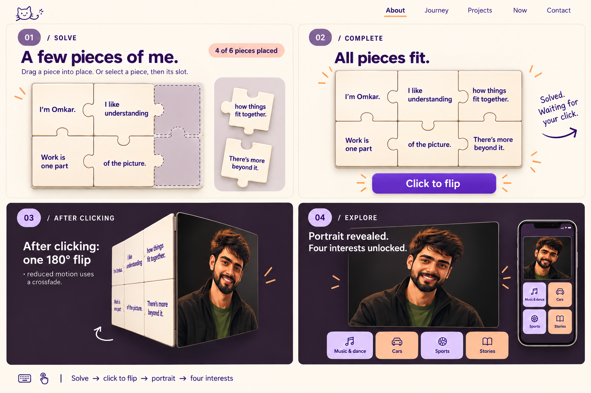
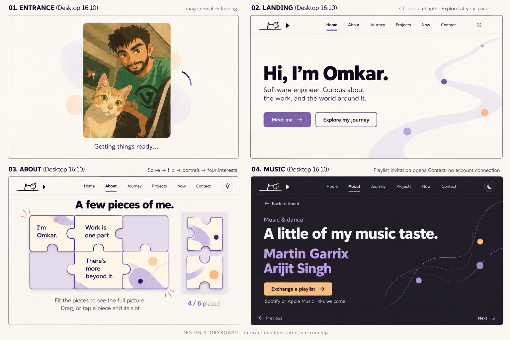
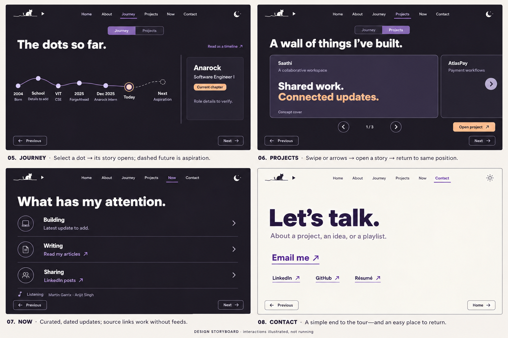
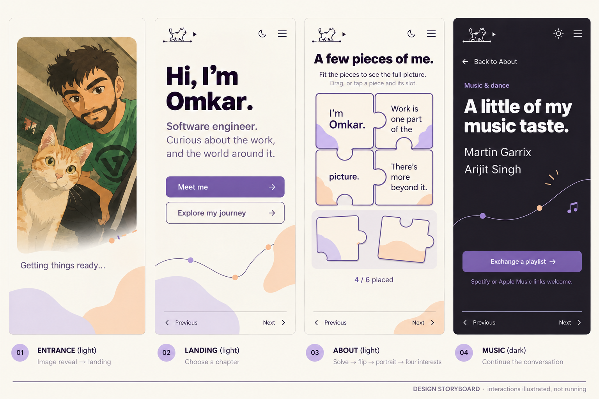
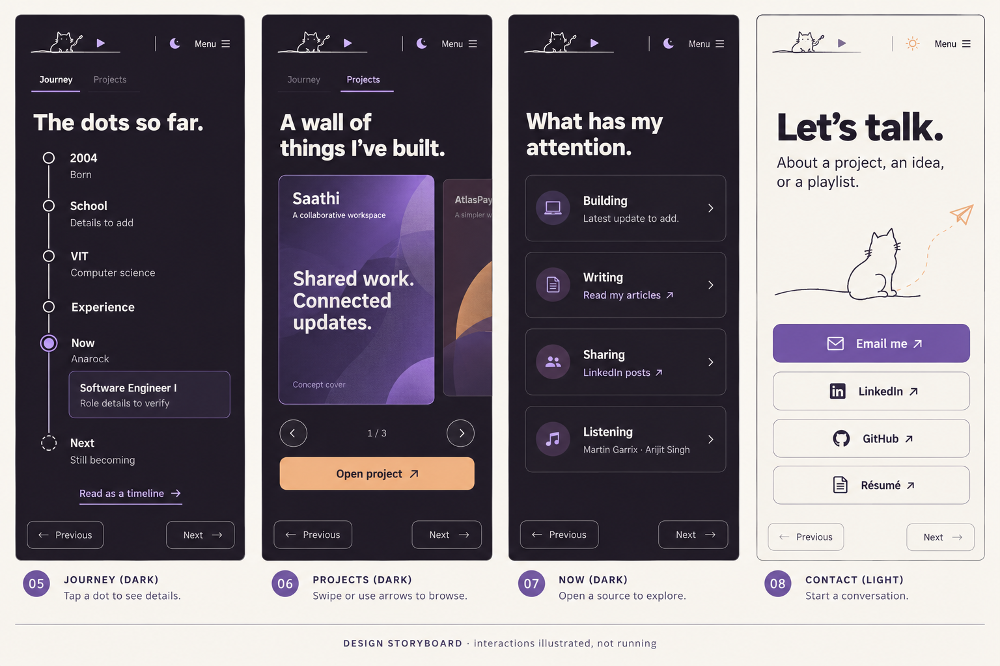
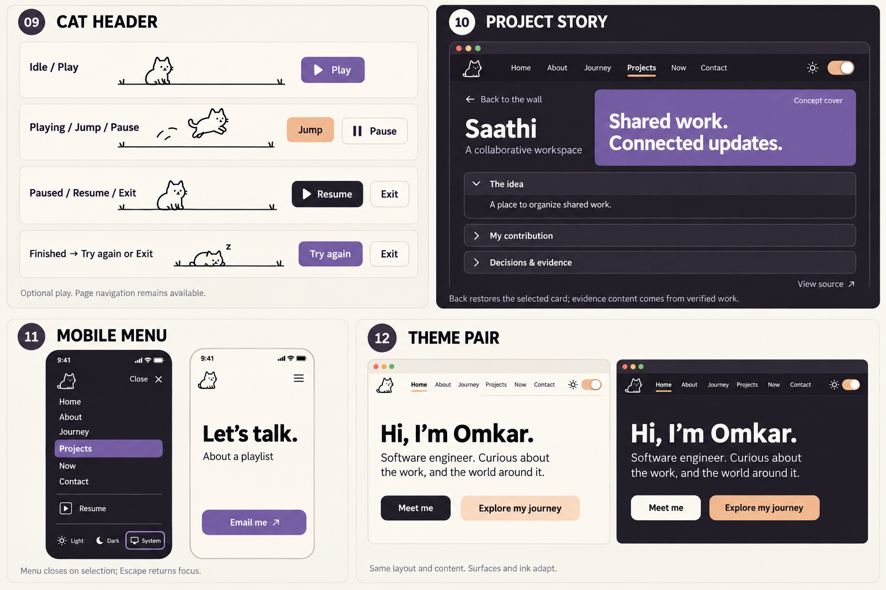

Updated · Solve, flip, discover
The visitor solves a small jigsaw whose face carries the About paragraph. When it is complete, a “Click to flip” button appears. The paragraph stays visible until the visitor clicks. Then the whole board turns to reveal one continuous jacket portrait, without puzzle seams. Only then do Music & dance, Cars, Sports and Stories open underneath.

Drag or select a piece and its slot. Solved state survives navigation. Reduced motion substitutes a crossfade for the flip. Projects and Contact remain reachable while the puzzle is unsolved.
The loader still uses your image with Stella. The reverse of the board uses the original jacket portrait.


01–04 · Desktop: meeting Omkar
Portrait loader, landing, a solvable About puzzle, and the music view reached after the reveal. These are separate pages.

05–08 · Desktop: work and connection
Life graph, horizontal project wall, current interests and work, then a simple contact page.

01–04 · Mobile: meeting Omkar
Mobile loader and solvable About puzzle. Tap a piece and its slot; solving enables Click to flip. Only that action reveals the portrait and interests.

05–08 · Mobile: work and connection
Vertical timeline, swipeable project wall with arrows, curated updates and contact.

09–12 · Interaction details
Optional cat controls, project detail with return to the wall, menu state and matching light/dark layouts.

What the next prototype must prove
| Interaction | Expected behavior |
|---|---|
| Portrait loader → landing | Reveal the supplied Omkar-and-Stella illustration. Genuine readiness, no artificial delay; failed image cannot block entry. Header game remains separate. |
| Cat play | Intentional activation, Jump/Pause/Exit, no global key capture, no navigation gate. |
| About puzzle → flip → interests | Fit the paragraph pieces. Completion enables Click to flip. Explicit activation reveals the continuous jacket portrait, then four interests. Tap/keyboard placement works alongside dragging; reduced motion uses crossfade. |
| Graph → milestone | Readable history and selected detail; future is labeled aspiration. Mobile uses a vertical path. |
| Wall → project → wall | Explicit arrows and swipe; Back restores card position and focus. |
| Theme / reduced motion | Same content and layout in both themes. All content remains usable without movement. |
Known editorial gaps: school history, final milestone narratives, selected project media and dated “Now” content. Artists are user-confirmed; other favorites remain intentionally sparse. The compressed mobile graph will expand to show internship and SDE milestones during detailed design.
Loader and About use the supplied portrait assets. Generated header-cat art and cover decoration remain concepts, not selected production assets. The proposed implementation reuses React Flow, the existing Embla carousel, Radix controls, Motion and next-themes.
Read the full state and component specification · Generation prompts